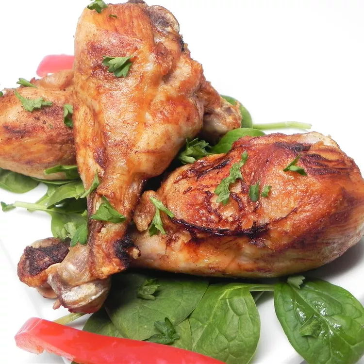

Haitian-Style Fried Chicken

Haitian-Style Fried Chicken
Also known as Poul Fri, Haitian Fried Chicken (Recette poulet frit) skips the batter of the American style dish and instead infuses the meat with aromatic spices and seasonings.
Ingredients
- 3 pounds chicken legs
- a half white onion, chopped
- 1 cup lemon juice
- 1 head garlic, cloves separated and minced
- 3 tablespoons seasoned salt
- 3 tablespoons paprika
- 3 tablespoons ground thyme
- 2 tablespoons ground black pepper
- 2 tablespoons whole cloves
- vegetable oil for frying
Step-By-Step To make Haitian-Style Fried Chicken
-
Combine chicken legs, lemon juice, onion, garlic, seasoned salt, paprika, thyme, pepper, and cloves in a large bowl.
Cover and marinate in the refrigerator for at least 30 minutes to 12 hours.
-
Heat oil in a deep fryer or large saucepan over medium-high heat. Fry chicken in batches until golden brown, about 8
minutes. An instant-read thermometer inserted near the bone should read 165 degrees F (74 degrees C). Drain on paper towels.